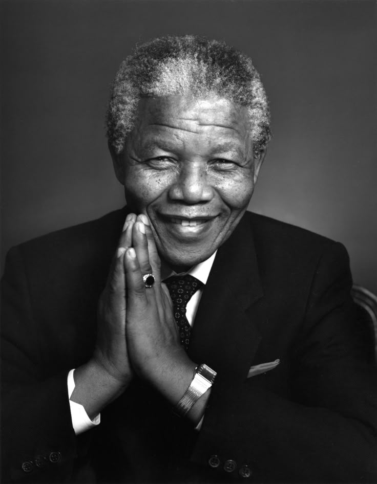

SumberNelson Mandela (1918–2013) Nelson Mandela adalah pemimpin anti-apartheid di Afrika Selatan, aktivis hak asasi manusia, dan presiden kulit hitam pertama Afrika Selatan. Ia berjuang melawan sistem apartheid (diskriminasi rasial) dan menghabiskan 27 tahun di penjara sebelum akhirnya membebaskan negaranya dari sistem tersebut.
Nama lengkap: Nelson Rolihlahla Mandela
Lahir: 18 Juli 1918 di Mvezo, Afrika Selatan
Suku: Xhosa (kelompok etnis di Afrika Selatan)
Pendidikan:Universitas Fort Hare (dikeluarkan karena protes mahasiswa) Universitas Witwatersrand (belajar hukum)
Profesi awal: Pengacara, aktivis
1. Bergabung dengan ANC (African National Congress)
ANC adalah organisasi yang menentang diskriminasi rasial oleh pemerintah kulit putih Afrika Selatan Mandela mendukung perlawanan damai, tetapi setelah pembantaian Sharpeville (1960), ia mendukung perjuangan bersenjata
2. Dipenjara Selama 27 Tahun
Ditangkap tahun 1962 dan dihukum penjara seumur hidup karena aktivitas melawan pemerintah Menghabiskan 18 tahun di Pulau Robben, lalu dipindahkan ke penjara lain Menjadi simbol perjuangan global melawan ketidakadilan
3. Bebas dan Mengakhiri Apartheid (1990–1994)
Dibebaskan pada 11 Februari 1990 setelah tekanan dunia terhadap pemerintah Afrika Selatan Bernegosiasi dengan Presiden F.W. de Klerk untuk menghapus apartheid 1994: Afrika Selatan mengadakan pemilu demokratis pertama, Mandela terpilih sebagai presiden kulit hitam pertama
Fokus pada rekonsiliasi rasial dan pembangunan ekonomi Membentuk Komisi Kebenaran dan Rekonsiliasi untuk menyembuhkan luka akibat apartheid Tidak mencalonkan diri untuk periode kedua, menunjukkan sikap demokratis.
Meninggal dunia: 5 Desember 2013 di usia 95 tahun
Dikenang sebagai ikon perdamaian, demokrasi, dan hak asasi manusia. Hari kelahirannya, 18 Juli, diperingati sebagai Hari Nelson Mandela Internasional. Nelson Mandela mengajarkan bahwa perdamaian dan keadilan lebih kuat daripada kebencian dan balas dendam.